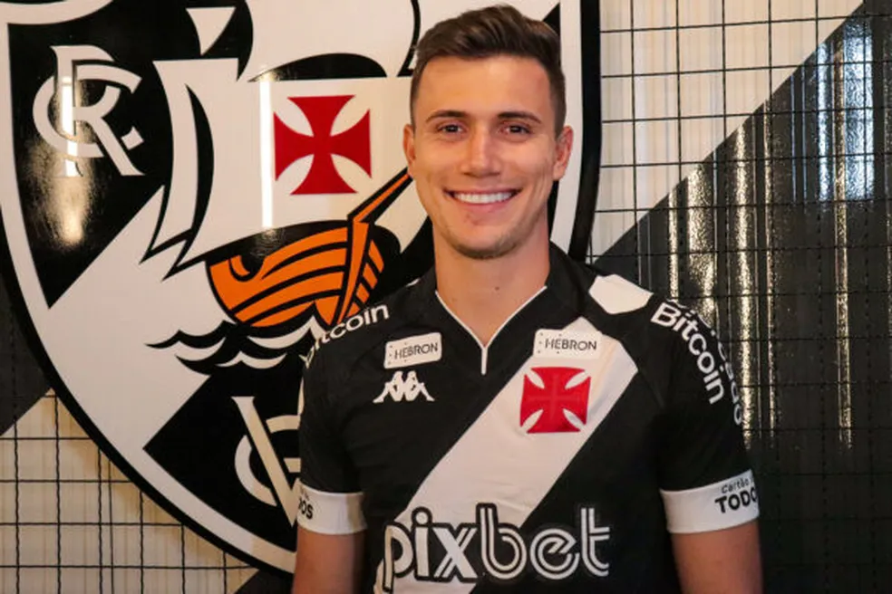
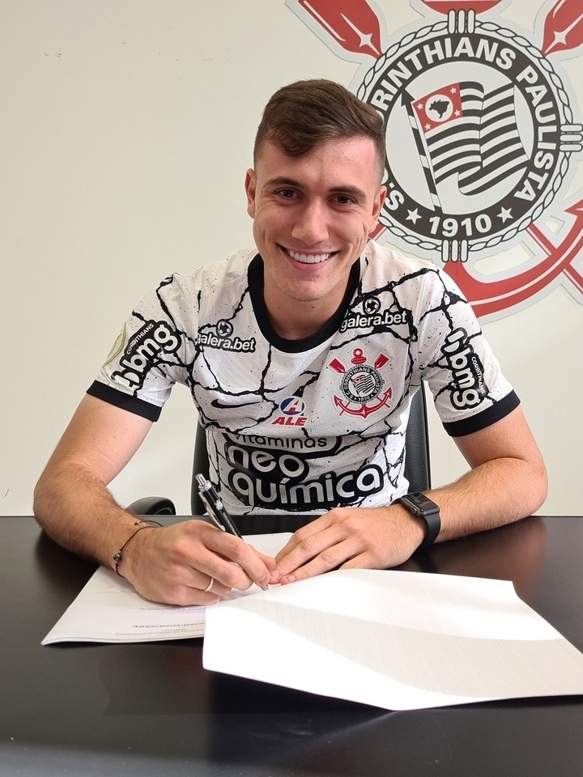
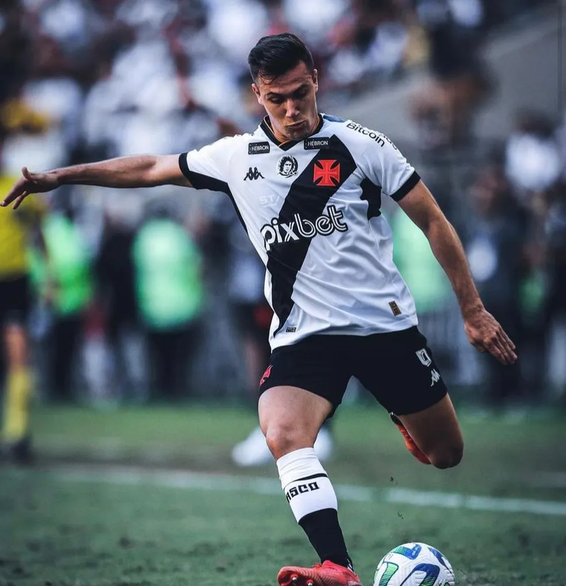

Lucas Piton

Lucas Piton Crivellaro (Jundiaí, 9 de outubro de 2000) é um futebolista italo-brasileiro que atua como lateral-esquerdo.
Piton iniciou sua carreira pelo Corinthians em 2017, no futsal. Realizou sua estreia pelo time profissional do Corinthians
no dia 8 de dezembro de 2019, contra o Fluminense.

Sua estadia no time da Neo Química Arena foi longeva, mas com certa irregularidade. Após debutar em 2019, o jogador conseguiu participar
de 20 jogos na temporada seguinte somente no Brasileirão. Contudo, foi na reta final desse mesmo Campeonato que o atleta passou a perder
seu espaço para o experiente Fábio Santos.
Em 2022, após entrar em negociações com o outra equipe brasileira, o jogador ficou de fora de um treino do Timão.Foi anunciado pelo
Vasco da Gama no dia 28 de dezembro, com o Cruzmaltino comprando 60% dos diretos do jogador por cerca de 3 milhões de euros.
Lucas assinou um contrato com o clube carioca válido por quatro temporadas.

Estreou pelo Vasco no dia 17 de de janeiro, numa derrota por 3x0 para o River Plate, em amistoso realizado em Orlando. No entanto, sua
estreia em um jogo oficial ocorreu no dia 25 de janeiro, pelo Campeonato Carioca, na vitória por 2 a 0 contra a Portuguesa, em que Piton
deu uma assistência para o primeiro gol, marcado por Nenê. O lateral ainda foi eleito o craque do jogo pela transmissão televisiva da partida.
Marcou seu primeiro gol pelo clube no dia 2 de fevereiro, na goleada por 5x0 sobre o Resende, válida pelo Campeonato Carioca.
O atleta foi peça fundamental na permanência do clube na Série A do Brasileirão, sendo o lateral com o maior percentual de cruzamentos certos
e passes decisivos na competição e o líder de assistências da equipe na temporada.[25] No ano, Piton foi o jogador de linha que mais tempo
ficou em campo pelo Campeonato Brasileiro. Atualmente, conta com 61 jogos, 4 gols e 8 assistências pelo clube